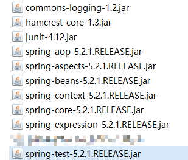

<html><head><meta charset='utf-8'><meta name='viewport' content='width=device-width, initial-scale=1'>
<meta name='applicable-device' content='pc'><meta name='keywords' content='电脑,电脑讲解,电脑技术,编程,电脑故障维修Spring之junit测试集成' />
<script src='../../highlight/highlight.pack.js'></script>
<link rel='stylesheet' type='text/css' href='../../highlight/styles/monokai.css'/>

<link rel='stylesheet' href='../../fenxiang/dist/css/share.min.css'>
<script src='../../fenxiang/src/js/social-share.js'></script>
<script src='../../fenxiang/src/js/qrcode.js'></script>

</head><body><script>hljs.initHighlightingOnLoad();</script><script>
var system ={};  
var p = navigator.platform;       
system.win = p.indexOf('Win') == 0;  
system.mac = p.indexOf('Mac') == 0;  
system.x11 = (p == 'X11') || (p.indexOf('Linux') == 0);     
if(system.win||system.mac||system.xll){
document.write("<link href='../css/3.css' rel='stylesheet' type='text/css'>");}else{ document.write("<link href='../css/3wap.css' rel='stylesheet' type='text/css'>");}</script><script src='../../js/3.js'></script><div class='div2'><div class='heading_nav'><ul><div><li><a href='../../index.html'>首页</a></li>
</div><div onclick='hidden1()' >分享</div>
</ul></div></div>
<div id='heading_nav2'> 
<li class='row' >
<div class='social-share' data-mode='prepend'><a href='javascript:' class='social-share-icon icon-heart'></a></div></li></div><script charset='utf-8' src='../../3/js/hengfu.js'></script><script charset='utf-8' src='../../3/js/hengfu2.js'></script><hr><div class='div1'><div class='biaoti'><center>Spring之junit测试集成</center></div><div class='banquan'>原文出处:本文由博客园博主Hu_qaq提供。<br/>
原文连接:https://www.cnblogs.com/hublogs/p/12005596.html</div><br>
    <h3 id="简介">简介</h3>
<p>Spring提供spring-test-5.2.1.RELEASE.jar 可以整合junit。<br />
优势：可以简化测试代码（不需要手动创建上下文，即手动创建spring容器）</p>
<h3 id="使用spring和junit集成的步骤">使用spring和junit集成的步骤</h3>
<p>1.导入jar包</p>
<p></p>
<p>2.创建包com.igeek.test,创建类SpringTest</p>
<blockquote>
<p>通过@RunWith注解，使用junit整合spring<br />
通过@ContextConfiguration注解，指定spring容器的位置</p>
</blockquote>
<p>3.通过@Autowired注解，注入需要测试的对象<br />
在这里注意两点：</p>
<blockquote>
<p>将测试对象注入到测试用例中</p>
</blockquote>
<blockquote>
<p>测试用例不需要配置<context:component-scan base-package="com.igeek"/></context:component-scan>，因为使用测试类运行的时候，会自动启动注解的支持(仅对该测试类启用)</p>
</blockquote>
<h3 id="举例说明一下">举例说明一下</h3>
<p>1.第一种：在applicationContext.xml中不开启注解扫描</p>
<blockquote>
<p>配置文件:</p>
</blockquote>
<pre><code><code>&lt;?xml version=&quot;1.0&quot; encoding=&quot;UTF-8&quot;?&gt;&lt;beans xmlns=&quot;http://www.springframework.org/schema/beans&quot;       xmlns:xsi=&quot;http://www.w3.org/2001/XMLSchema-instance&quot;       
xmlns:context=&quot;http://www.springframework.org/schema/context&quot;       xmlns:aop=&quot;http://www.springframework.org/schema/aop&quot;       
xsi:schemaLocation=&quot;http://www.springframework.org/schema/beans        
https://www.springframework.org/schema/beans/spring-beans.xsd http://www.springframework.org/schema/context 
https://www.springframework.org/schema/context/spring-context.xsd http://www.springframework.org/schema/aop 
https://www.springframework.org/schema/aop/spring-aop.xsd&quot;&gt;     

    &lt;bean id=&quot;userService&quot; class=&quot;com.igeek.service.impl.UserServiceImpl&quot;&gt;&lt;/bean&gt;
&lt;/beans&gt;</code></pre>
<blockquote>
<p>service层:</p>
</blockquote>
<pre class="java"><code>public class UserServiceImpl implements IUserService {

    @Override    
    public void save() { 
        System.out.println(&quot;save...&quot;);   
    }
}</code></pre>
<blockquote>
<p>测试类:</p>
</blockquote>
<pre class="java"><code>@RunWith(SpringJUnit4ClassRunner.class)
@ContextConfiguration(locations = &quot;classpath:applicationContext.xml&quot;)
public class Test01 { 
    @Autowired   
    private IUserService userService;
    
    @Test    
    public void test01(){ 
        userService.save();   
    }
}</code></pre>
<p>2.第二种：在applicationContext.xml中开启注解扫描</p>
<blockquote>
<p>配置文件:</p>
</blockquote>
<pre><code><code>&lt;?xml version=&quot;1.0&quot; encoding=&quot;UTF-8&quot;?&gt;
&lt;beans xmlns=&quot;http://www.springframework.org/schema/beans&quot;       xmlns:xsi=&quot;http://www.w3.org/2001/XMLSchema-instance&quot;       
xmlns:context=&quot;http://www.springframework.org/schema/context&quot;       xmlns:aop=&quot;http://www.springframework.org/schema/aop&quot;       
xsi:schemaLocation=&quot;http://www.springframework.org/schema/beans        
https://www.springframework.org/schema/beans/spring-beans.xsd http://www.springframework.org/schema/context 
https://www.springframework.org/schema/context/spring-context.xsd http://www.springframework.org/schema/aop 
https://www.springframework.org/schema/aop/spring-aop.xsd&quot;&gt;  

&lt;!--开启注解扫描--&gt;    
&lt;context:component-scan base-package=&quot;com.igeek&quot;&gt;&lt;/context:component-scan&gt;
&lt;/beans&gt;</code></pre>
<blockquote>
<p>service层:</p>
</blockquote>
<pre class="java"><code>@Service(&quot;userService&quot;)
public class UserServiceImpl implements IUserService {

    @Override    
    public void save() { 
        System.out.println(&quot;save...&quot;);   
    }
}</code></pre>
<blockquote>
<p>测试类:</p>
</blockquote>
<pre class="java"><code>@RunWith(SpringJUnit4ClassRunner.class)
@ContextConfiguration(locations = &quot;classpath:applicationContext.xml&quot;)
public class Test01 { 
    @Autowired   
    private IUserService userService;
    
    @Test    
    public void test01(){ 
        userService.save();   
    }
}</code></pre>

</div>
</div><hr><script charset='utf-8' src='../../js/sming.js'></script></body></html>